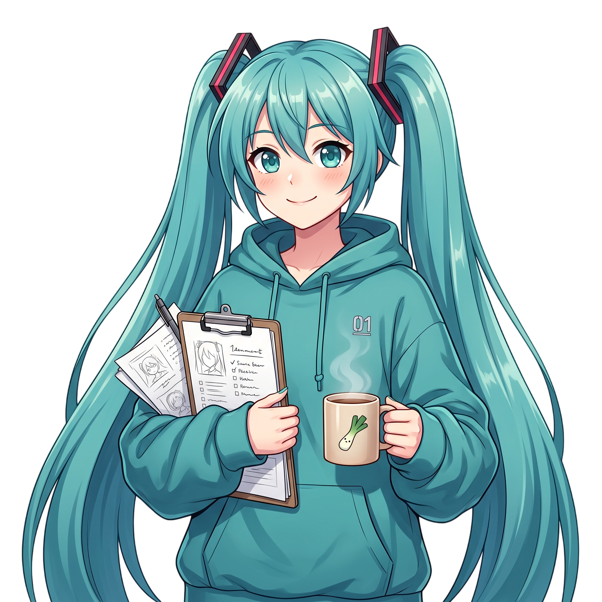

Teto’s No-Bullshit Decision Matrix
Two paths. One next step. Teto gets your decision out of the waiting room.

WEEBOKAGE // PERSONAL SECTOR
Welcome back, Producer. Let’s find your rhythm.
RESTORING YOUR SAVED PROGRESS…
PERSONAL OPERATING SYSTEM / V.01
Small steps. Higher frequency. Your life, in sync.

COMPANION // ONLINEYour next small step matters.
“You bring the raw material. I handle the rest. Try to keep up.” — Teto
Two paths. One next step. Teto gets your decision out of the waiting room.
Plausible sci-fi names, memorable acronyms and five precise lore specifications.
Short sentences. Clear intentions. Every glance shifts the scene.
A precise roast. A better draft. Your meaning stays yours.
Thoughts in. Concrete missions out. You choose what enters your profile.
Turn an idea into a useful master prompt. Structured, naturally.
Plot holes and cliches: fewer is better. Tension: more is better. AI estimates, not measurements.
Your input is sent to Groq for processing. Review the results; quests are saved only when you choose to add them.